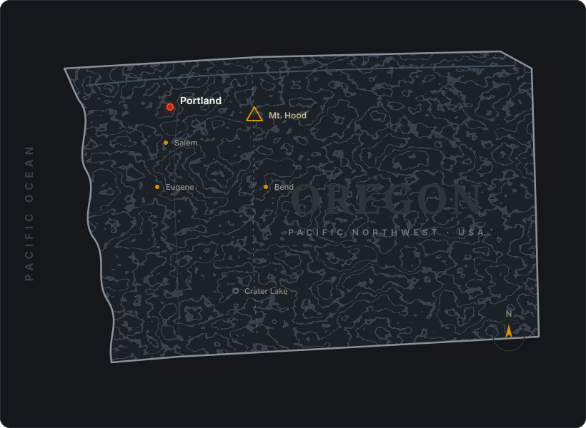

10 Deadliest Disasters is an independent disaster-education and preparedness publication. We study the catastrophes that have shaped human history — and translate what they teach into clear, practical steps that ordinary households, especially here in the Pacific Northwest, can take before the next one arrives.
Most people learn about disasters only in the middle of one. The news cycle arrives with the shaking, the flood, or the smoke, and disappears a week later. By then it's too late to do the one thing that matters most: prepare in advance. Our entire reason for existing is to move that conversation earlier — to the quiet, ordinary days when you actually have time to fill a water container, pack a go-bag, and make a plan with your family.
Our mission
We believe preparedness should be calm, evidence-based, and accessible to everyone — not the province of survivalists or doomsday marketers. Our mission is simple: help people understand real catastrophic risk without fear-mongering, and give them a concrete, prioritized path to readiness they can actually follow.
That means we say plainly what the science supports, we admit where the estimates are uncertain, and we never let a product we might earn a commission on change what we recommend. The goal is not to sell you a bunker. It's to make sure that if the ground shakes for five minutes or the sky turns orange with smoke, your household already knows what to do.
Why "the deadliest disasters"?
We organize everything around the ten categories of disaster that have killed the most people across recorded history — from pandemics and floods at the top of the list, through earthquakes, hurricanes, and tsunamis, down to emerging threats like cyber attacks on the infrastructure we all depend on.
Ranking matters because attention is finite. Not every hazard deserves equal worry, and the disasters that feel most dramatic on screen are not always the ones most likely to harm you. By starting from death toll — the hardest, most honest measure of impact — we can be clear-eyed about where preparation actually pays off. Each category gets its own fully-sourced pillar report explaining what makes it lethal, the history behind the headline numbers, and what readiness genuinely requires.
Why the Pacific Northwest — and Cascadia
We're based in Portland, Oregon, and the Pacific Northwest is where our reporting hits closest to home. This corner of North America is one of the most geologically active places on the continent, and it carries a specific, scientifically well-documented threat that most residents still underestimate: the Cascadia Subduction Zone.
Cascadia is a 700-mile fault running off the coast from northern California to British Columbia. It is capable of a magnitude-9.0 megaquake — the kind that produces several minutes of violent shaking followed, for the coast, by a tsunami arriving in as little as fifteen minutes. The last full rupture was in January 1700. These events recur roughly every 300 to 500 years, and scientists estimate a one-in-three chance of another within the next fifty years. For a Portland-area household, no other single scenario better justifies getting prepared.
But Cascadia is only part of the regional picture. The Northwest also faces active Cascade volcanoes like Mount Hood and Mount Rainier, an annual wildfire and smoke season that now blankets cities for weeks, atmospheric-river flooding, and the heat domes that proved deadly in 2021. Our PNW Focus hub brings these overlapping threats together so you can see your real local risk profile in one place.

How we help you prepare
Preparedness can feel overwhelming, so we break it down into a simple, repeatable framework — the same one our editors use to evaluate any household's readiness. It comes down to a handful of questions:
- Water. Can you cover roughly one gallon per person per day for two weeks? It's the first thing to run out and the hardest to improvise.
- Food. Do you have two weeks of shelf-stable calories that need no refrigeration and little cooking?
- Shelter & warmth. Can you stay safe and warm if the power is out for days and your home is damaged?
- Health & sanitation. First aid, medications, and a plan for hygiene when the taps stop.
- Communication. A way to get information and reconnect with family when cell networks fail.
- A plan. Everyone in the household knowing where to go and what to do, rehearsed before the emergency.
Our flagship guide, How to Build a Go-Bag That Will Actually Get You Through Cascadia, walks through each of these in detail. Every disaster pillar page also includes an "Are You Prepared?" checklist tailored to that specific hazard, because preparing for wildfire smoke is not identical to preparing for a flood or a quake.
Two weeks, not 72 hours
If there is one idea we want every reader to take away, it's this: the familiar "72 hours" of supplies is not enough for the Pacific Northwest. After a major Cascadia rupture, roads may buckle, bridges over the Willamette could fail, and the region could be carved into isolated pockets while crews work to restore access. FEMA and Oregon Emergency Management both advise residents west of the Cascades to plan for a minimum of two weeks of self-sufficiency.
Two weeks sounds daunting, but it's a target you build toward, not a bill you pay all at once. A few extra cases of water this month, a food bucket the next, a hand-crank radio after that — incremental, affordable steps add up to genuine resilience faster than most people expect.
The ten disasters we cover
Each link below leads to a full, independently researched report:
- Pandemics
- Floods
- Earthquakes
- Hurricanes
- Tsunamis
- Volcanic Eruptions
- Nuclear Accidents
- Terrorist Attacks
- Wildfires
- Cyber Attacks
How we research and evaluate gear
Our reporting draws on public, authoritative sources — the U.S. Geological Survey, FEMA, the National Weather Service, the American Red Cross, and peer-reviewed scientific literature. Where historical death tolls are debated, as they often are for events centuries old, we say so and give ranges rather than false precision.
When we recommend preparedness gear, we evaluate it against established guidance — Red Cross kit standards, FEMA recommendations, and real-world performance — not marketing claims. We favor the unglamorous items that genuinely matter: water storage and filtration, two-week food supplies, hand-crank radios, respirators for smoke and ash, and the simple tools that prevent post-disaster fires. If a product can't earn its place against that bar, it doesn't get our recommendation, no matter what commission it might pay.
Who this is for
This site is for anyone who wants to be a little more ready than they were yesterday — new homeowners, parents, renters, coastal visitors, and lifelong Northwesterners alike. You don't need to be an expert, spend a fortune, or rearrange your life. You just need a clear sense of the real risks where you live and a short list of the next sensible steps. We exist to provide both.
Preparedness is a practice, not a purchase
It's tempting to think readiness is something you buy once — a kit on a shelf, checked off and forgotten. In reality, the households that come through a disaster well treat preparedness as a habit they maintain. Water gets rotated. Batteries get tested. The family plan gets revisited when a child changes schools or a new baby arrives. Skills — knowing how to shut off the gas, how to filter water, how to stop a bleed — matter as much as supplies, and skills fade without practice.
That's why our guides emphasize routines over one-time spending. Twice a year, when the clocks change, is a natural moment to check expiration dates, refresh stored water, and walk through your plan out loud with everyone in the house. Coastal visitors can make a habit of noting the tsunami evacuation route the moment they arrive, the same way they'd locate the exits on a plane. None of this is expensive; all of it compounds over time into genuine resilience.
We also believe preparedness is a community endeavor, not a solo one. The first responders after a major Cascadia quake won't arrive in uniform — they'll be your neighbors. Knowing who on your block has medical training, a generator, or mobility needs turns an isolated street into a functioning team. Programs like Map Your Neighborhood and CERT (Community Emergency Response Team) training exist precisely to build that capacity before it's needed, and we encourage readers to seek them out locally.
What you'll find on this site
Alongside our ten disaster pillar reports, you'll find practical guides like our go-bag walkthrough, a Pacific Northwest risk hub that maps the region's overlapping threats, and editor-tested gear recommendations organized by hazard. Everything is written to be read in plain language, skimmed when you're busy, and acted on in small steps. We update our guidance as the science evolves and as our own household testing turns up better answers — because the best preparedness advice is the kind you'll actually use.
A note on affiliate links
Some of the product links on this site are affiliate links, which means we may earn a small commission if you buy through them — at no additional cost to you. That support helps keep our research free to read. It never influences our rankings or recommendations, and we only ever point you toward gear we'd stage in our own homes.
Knowledge is the first supply. Everything else is easier once you have it.